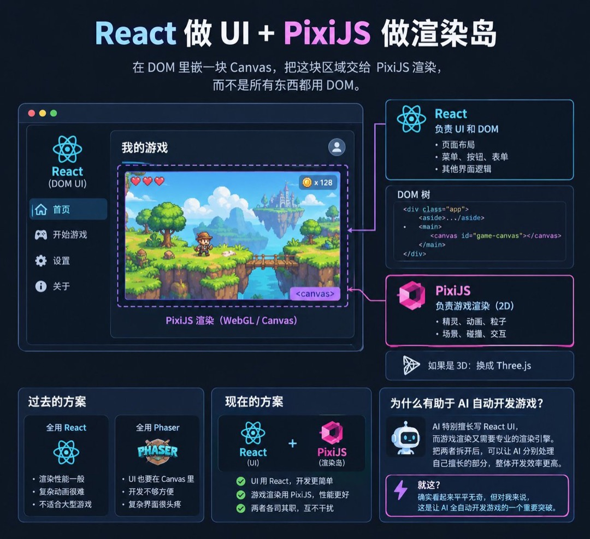
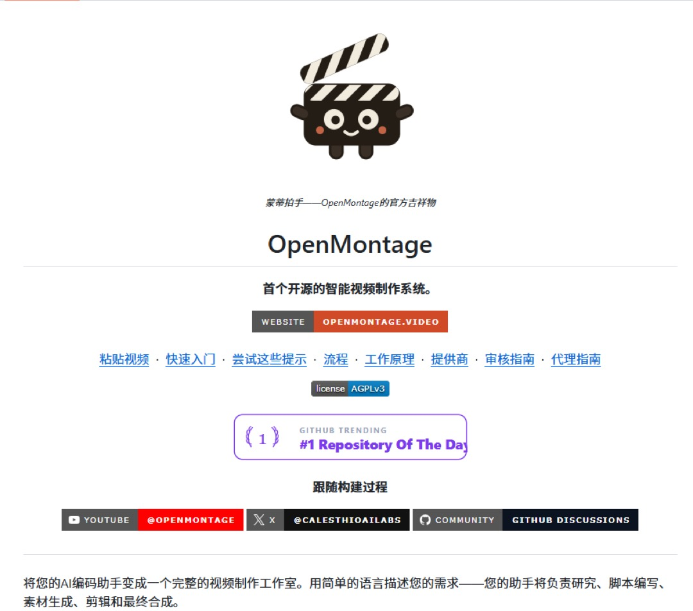

本期速览
01 安全审计Skill分六阶段独立验证
02 Claude Duet主动Agent内测
04 React配PixiJS渲染岛分工做游戏
05 Magpie网关映射流式与工具调用
07 OpenMontage口述生成AI短片
01｜安全审计Skill分六阶段独立验证
来源（X） · @RwatitFahsa · 2026-10-24 22:12
它没有让一个 Agent 从头扫到尾，然后自信地输出几十个“高危漏洞”。
整个审计被拆成六个阶段：
1、先画架构、信任边界和输入面；
2、再按覆盖清单分配多个独立 Agent 查找问题；
3、候选漏洞交给新的 Agent 反向验证；
4、最后输出结构化的 findings.json 和审计报告。
结果也不只分“有漏洞”和“没漏洞”，而是：
1、confirmed：证据链完整；
2、needs_validation：还有具体事实没验证；
3、rejected：已经被推翻。
最关键的一条是：发现漏洞和验证漏洞的不能是同一个 Agent。
这能减少模型为了证明自己正确，继续替错误结论找理由。
不过它不是点一下就安全了。目标代码的构建、测试和模糊测试，需要运行在禁网、限资源、清理环境变量的系统级沙箱中；否则只能保留为待验证线索。
AI 安全审计真正需要的，不是更大胆地下结论，而是更严格地约束证据。
仓库：https://github.com/cloudflare/security-audit-skill
02｜Claude Duet主动Agent内测
来源（X） · @turingbook · 2026-10-24 22:14
引用内容
karan ahuja @ahuja_karan
中文译文
👋🏼 迟来的更新：我加入了 @AnthropicAI，很兴奋终于可以分享我和团队一直在构建的东西。
隆重推出 Claude Duet，一款处于研究预览阶段的新应用，其中 Claude 作为你的主动代理运行。它基于 Opus 5.5 构建，我们希望打造一个你可以信赖的伙伴。
它会主动带着需要你关注的事情来到你面前，在 6,000 多个连接器和插件之间协作工作，在你离开时持续运行，并在采取行动之前先与你确认。
我们为那些在工作和家庭之间忙碌奔波的专业人士和小企业主打造了它。早期测试者正在用它来帮助经营业务、承担工作中更大的项目，以及重新获得时间以更好地陪伴家人。
我一直用 Claude Duet 来构建 Claude Duet，这是我职业生涯中最愉快、最有意义的经历。
我会在这里定期分享关于构建它的进展，以及新功能和改进上线时的更新。请持续关注。
加入候补名单，帮助我们塑造这款产品：https://claude.com/product/claude-duet
原文
👋🏼 Overdue update: I joined @AnthropicAI, and excited to finally share what my team and I have been building.
Introducing Claude Duet, a new app in research preview where Claude works as your proactive agent. It runs on Opus 5.5, and we built it to be a partner you can trust.
It comes to you with what needs your attention, works across 6,000+ connectors and plugins, keeps going when you step away, and checks with you before it acts.
We built it for professionals and small business owners juggling a lot at work and at home. Early testers are using it to help run their businesses, take on bigger projects at work, and get time back to be more present.
I've been using Claude Duet to build Claude Duet, and it's been the most joyful and meaningful experience of my career.
I’ll be sharing regular updates here on how we’re building it, plus new features and improvements as they ship. Follow along.
Join the waitlist and help us shape the product: https://claude.com/product/claude-duet
03｜Rust飞书客户端百万字渲染5.7ms
来源（X） · @s1dashu · 2026-10-24 18:31
- 覆盖了飞书文档的绝大部分功能，除了必须依赖云端的 feature。
- 标题、文字、列表、表格、分栏、高亮、引用、代码块，各种交互表现细节和 web 版保持高度一致。
- 100 万字的文档，单帧绘制耗时中位数 5.7ms，性能远超 web 版。
- 28MB 的轻量客户端，纯本地存储。
做完这个测试才第一次切身感受到什么叫“许愿式编程”，opus 5.5 就像一个事无巨细的老管家，宁愿跑三天三夜也要帮我把所有细节都处理好，这感觉太神了。
出于对飞书团队的尊重，这个项目不会对外发布😄
04｜React配PixiJS渲染岛分工做游戏
来源（X） · @cholf5 · 2026-10-24 23:18
“岛”的意思是：React 负责 DOM/UI，在 DOM 树里嵌一块区域，交给 PixiJS 用 Canvas/WebGL 做真正的游戏渲染，而不是所有东西都用 DOM。PixiJS 是偏 2D 的，如果做 3D，就换成 Three.js。
这个方法可以说非常屌，以前确实没想过，也是最近跟 AI 聊时它无意中抖出来的。以前我要么全用 React，要么就全用 Phaser 了。用 Phaser 时整个 UI 也是在 Canvas 里做的，肯定没 React 做起来方便。
这个方法在我说出来后，你可能会觉得：“就这？”，确实看起来平平无奇，不过用上后，我想在让“AI 全自动开发游戏”这件事上会非常有帮助。
因为 AI 本来就很擅长写 React UI，而游戏里的核心渲染又可以直接交给成熟的渲染引擎。两边各干各的，反而比让 AI 在一个巨大的游戏框架里同时处理 UI、渲染和交互要简单很多。

05｜Magpie网关映射流式与工具调用
来源（X） · @HunziDaily · 2026-10-24 13:40
大模型在做编程任务时，不仅有普通的文本流，更依赖极其复杂的【Tool Calls（工具调用）】和【Thinking Block（思考链）】。
不同厂家的参数结构、流式 Chunk 切片逻辑、甚至异常报错的返回码完全不同。
稍有不慎，Agent 就会解析失败，代码直接写飞。
Magpie 最强的地方，就是把流式推理、多步骤工具调用在本地内存里做到了像素级映射。
外部的 Claude Code 以为自己一直在跟官方对话，
底层的网关早就把数据流洗得干干净净。
极客对技术的死磕，全部藏在这个不到 15MB 的小工具里。
06｜Telegram内测Agent自填Key
来源（X） · @jax_wu · 2026-10-24 22:05
卧槽这思路挺狠——杜罗夫不靠 AI 抽成，就当你的插排。你的账单你自己结。
以前人人抢模型入口，现在入口往聊天软件里钻。等正式上了，套壳 App 那波可能真悬
07｜OpenMontage口述生成AI短片
来源（X） · @dandanetha · 2026-10-24 08:36
玩法挺离谱：对着 Claude Code、Cursor 这类 AI 编程工具随口说句人话，它转头就去写脚本、搜素材、配音、敲字幕、合成收尾，一条龙全包。
几个真实例子：
1️⃣ 60 秒皮克斯风动画短片，剧情、运镜、钢琴 BGM、动态字幕一样不缺，全由 AI 生成，总花费才 1.33 刀；
2️⃣ 电影预告片那股味儿拿捏得死死的，配乐把氛围感顶满；
3️⃣ 脑机接口产品宣传片，全程花销不到 1 刀。
更绝的是，一条爆款视频丢给它，它能拆出人家的脚本节奏、镜头关键帧和风格，回头甩你 2 到 3 个不同思路的方案。
0 成本就能把整套流程跑通，愿意花一两刀挂上高级模型，画质还能再提一档。背后是 12 条流水线、100+ 工具、700+ agent skills 在撑着。
🔗 https://github.com/calesthio/OpenMontage
